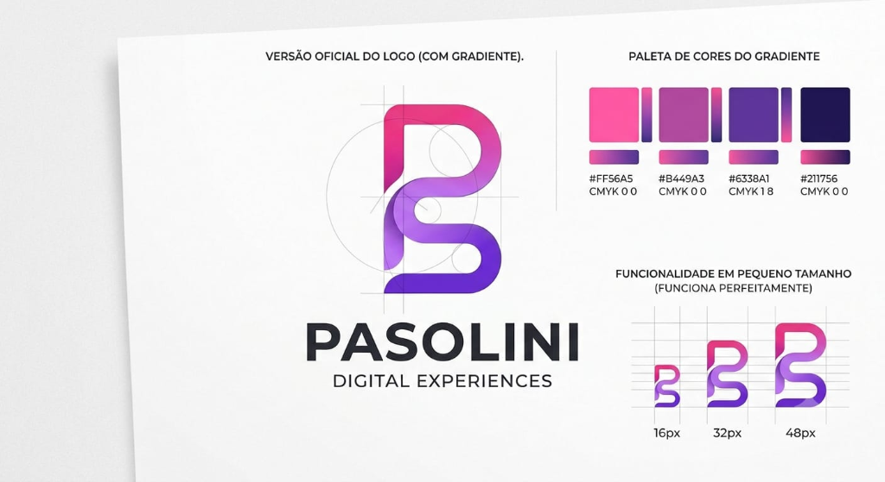
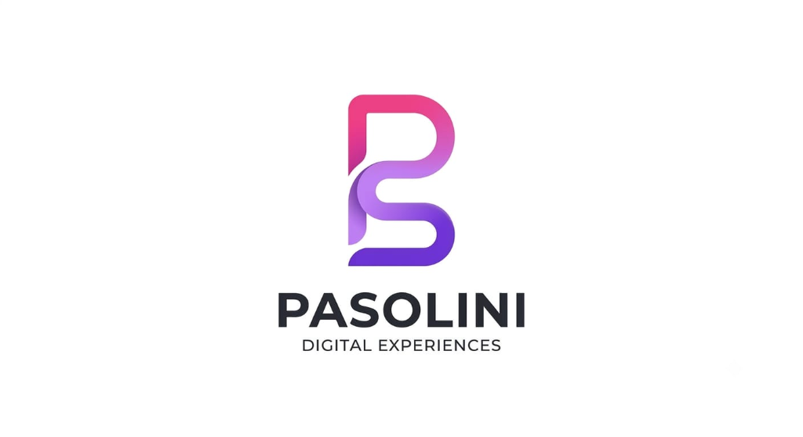

Tecnologia • Design • Desenvolvimento Web & Produto
Desenvolvimento que transforma ideias em soluções
Desenvolvo sites modernos, responsivos e personalizados, unindo tecnologia, design e estratégia para transformar ideias em experiências digitais profissionais
- Design moderno e estratégico, pensado para transmitir credibilidade
- Organização de projetos com soluções personalizadas, construídas para cada necessidade
- Experiência responsiva, rápida e adaptada a qualquer dispositivo
.png)
Performance
Core experience first
Stack principal
C# • .NET • ASP.NET
Sobre a Pasolini Design
Tecnologia, design e estratégia para transformar ideias em experiências digitais.
A Pasolini Design possui uma trajetória construída a partir da paixão por tecnologia, desenvolvimento e criatividade. A marca nasceu com o propósito de transformar ideias em soluções digitais modernas, funcionais e visualmente marcantes.
Com uma abordagem que une design, desenvolvimento e estratégia, a Pasolini Design cria sites, portfólios e soluções digitais personalizadas para profissionais, empreendedores e empresas que desejam fortalecer sua presença no ambiente digital.
Cada projeto é desenvolvido de forma estratégica, considerando não apenas a estética, mas também usabilidade, desempenho, responsividade e identidade de cada negócio.
Mais do que criar páginas, a Pasolini Design busca construir experiências digitais que transmitam confiança, valorizem marcas e aproximem empresas de seus clientes.

Serviços
Estratégia, design e presença digital para destacar sua marca.
Site Institucional
Uma presença digital profissional para transmitir credibilidade, autoridade e valor da sua marca.
Landing Pages
Páginas focadas em conversão, com mensagem clara, visual impactante e CTA estratégico.
Currículos Online
Perfil profissional moderno e elegante para destacar sua trajetória, experiência e diferenciais.
Portfólios
Apresentação premium do seu trabalho com visual refinado e foco em mostrar resultados.
Projetos
Projetos pensados para mostrar valor, processo e resultado.
Abaixo estão exemplos de apresentação comercial de projetos. Você pode substituir os textos e links pelos seus cases reais sem alterar a estrutura visual.

Site Institucional Premium
HTML • CSS • JavaScriptDescrição: Página profissional para fortalecer marca, autoridade e apresentação de serviços.
Problema: Presença digital fraca, comunicação pouco clara e baixa credibilidade visual.
Solução: Estrutura estratégica com hero forte, seções comerciais e layout responsivo.
Resultado: Melhor percepção de valor, navegação mais fluida e base pronta para conversão.
Landing Page de Conversão
React • Next.jsDescrição: Estrutura focada em campanhas, anúncios e captação de leads.
Problema: Necessidade de comunicar proposta de valor com rapidez e clareza.
Solução: Copy objetiva, CTA destacado, prova visual e experiência mobile-first.
Resultado: Jornada mais direta e ambiente preparado para testes e otimização.
Sistema Web com Painel
C# • .NET • SQL ServerDescrição: Aplicação para centralizar informações, fluxos internos e produtividade.
Problema: Processos descentralizados, retrabalho e dificuldade de acompanhamento.
Solução: Painel administrativo com arquitetura organizada, segurança e clareza operacional.
Resultado: Operação mais eficiente e base escalável para novas funcionalidades.
Diferenciais
Mais do que um site: uma solução pensada para você.
✔ Design moderno
✔ Performance e fluidez
✔ Personalização para refletir sua visão
✔ Segurança em cada etapa
✔ Organização do processo
✔ Comunicação clara e eficiente
✔ Resultado alinhado ao seu objetivo
✔ Experiência profissional e confiável
Como funciona
Um processo claro do início ao pós-entrega.
Interface bonita sem estratégia não basta.
Acredito que um bom site vai muito além da aparência. Meu objetivo é desenvolver interfaces bonitas, intuitivas e estratégicas, capazes de transmitir credibilidade, fortalecer marcas e transformar visitantes em clientes.
Cada projeto é pensado para oferecer uma experiência agradável, carregamento rápido e excelente funcionamento em qualquer dispositivo.
Estrutura sólida para crescer junto com o cliente.
Desenvolvo aplicações seguindo boas práticas de engenharia de software, priorizando organização, desempenho, segurança e escalabilidade.
Meu foco é criar soluções que continuem funcionando e crescendo junto com o negócio do cliente.
Objetivos
Construir uma marca reconhecida pela qualidade.
Meu objetivo é construir uma marca reconhecida pela qualidade dos projetos entregues, oferecendo soluções digitais que ajudem empresas e profissionais a crescerem através da tecnologia.
Mais do que desenvolver sites, quero criar experiências que transmitam confiança, fortaleçam negócios e gerem valor para cada cliente.
Estatísticas
Mesmo no início, a postura profissional faz diferença.
FAQ
Perguntas frequentes antes de iniciar um projeto.
Quanto custa?
O valor depende do escopo, número de páginas, funcionalidades e prazo. O ideal é alinhar os objetivos antes de definir o investimento.
Quanto tempo demora?
O prazo varia conforme a complexidade, mas cada projeto passa por planejamento, desenvolvimento, revisão e entrega organizada.
Você faz manutenção?
Sim. É possível contratar suporte, melhorias contínuas, ajustes técnicos e evolução do projeto.
Este item pode ser ajustado conforme sua realidade profissional. Se desejar, substitua esta resposta pela sua política atual.
Posso pedir alterações?
Sim. O projeto inclui etapas de revisão para alinhar o resultado com o objetivo definido no briefing.
Orçamento
Vamos transformar sua ideia em um projeto profissional.
Preencha o formulário para iniciar uma conversa. Você pode conectar este formulário com e-mail, WhatsApp, Formspree, Netlify Forms ou seu backend em .NET.
Contato
Canais prontos para você conectar.
Substitua os links abaixo pelos seus links reais antes de publicar o site.